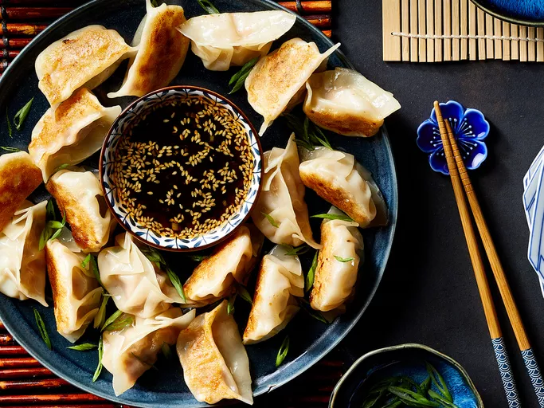

Dumplings

Description
Dumplings are a traditional Chinese dish. They are essentially meat and vegetable wrapped in dough and they can be boiled or fried.
Ingredients
Dipping sauce
- 1/2 cup soy sauce
- 1 tbsp seasoned rice vinegar
- 1 tbsp finely chopped Chinese chives
- 1 tbsp sesame seeds
- 1 tsp chile-garlic sauce (Sriracha)
Dumplings
- 1 lb ground pork
- 3 cloves garlic, minced
- 1 large egg, beaten
- 2 tbsp finely chopped Chinese Chives
- 2 tbsp soy sauce
- 1.5 tbsp sesame oil
- 1 tbsp minced fresh ginger
- 50 dumpling wrappers
- 1/2 cup vegetable oil for frying
Steps
- Prepare dipping by combining soy sauce, rice vinegar, chives, sesame seeds, and chile sauce in a small bowl.
- Prepare dumplings: Mix pork, garlic, egg, chives, soy sauce, sesame oil, and ginger in a large bowl until thoroughly combined.
- Place a dumpling wrapper on a lightly floured work surface and spoon about 1 tbsp of the filling in the middle.
- Wet the edge with water and crimp together to form small pleats to seal dumpling. Repeat.
- Heat 1-2 tbsp vegetable oil to skillet over medium-high heat. Place 8-10 dumplings in the pan and cook until browned. 2 minutes per side.
- Pour in 1 cup of water, cover and cook until the dumplings are tender and pork is cooked through, about 5 minutes.
- Repeat to cook remaining dumpings, adding more oil and water for each batch.
- Serve dumplings with dipping sauce.